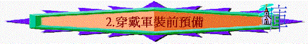

一.要脫去
∼要穿軍裝前，必須脫去一些事情
1.暗昧的行為
「黑夜已深，白晝將近；我們就當脫去暗昧的行為，帶上光明的兵器。」羅13:12
∼要帶上光明的兵器之先，要脫去暗昧的行為
A.暗昧行為的特質
a.是黑暗的
∼暗昧意思是‘darknessA一些黑暗及不好的行為，與光明相反的
b.是可恥的
「因為他們暗中所行的，就是提起來也是可恥的。」弗5:12
c.是無益的
「那暗昧無益的事，不要與人同行，倒要責備行這事的人；」弗5:11
B.暗昧行為的內容
「行事為人要端正，好像行在白晝。不可荒宴醉酒，不可好色邪蕩，不可爭競嫉妒；」羅13:13
a.荒宴
b.醉酒
c.好色邪蕩
d.爭競
e.嫉妒
∼如污穢的衣服一樣，要脫去
2.舊人和舊人的行為
「就要脫去你們從前行為上的舊人，這舊人是因私慾的迷惑漸漸變壞的；」弗4:22
∼舊人指未信主前受罪轄制的舊我
A.特質
a.受私慾迷惑
b.漸漸變壞
c.有舊人不好的行為
B.要對付
a.態度----要徹底
∼弗4:22,25,26,28,29,31；5:3，用「脫去」、「棄絕」、「不要」、「不再」、「一句不出口」、「除掉」、「連題都不可」等，要徹底對付舊人和舊人的行為
b.內容
(1)在言語上
(A)棄絕謊言
「所以你們要棄絕謊言，各人與鄰舍說實話，因為我們是互相為肢體。」弗4:25
(B)不說淫語
「污穢的言語一句不可出口，只要隨事說造就人的好話，叫聽見的人得益處。」弗4:29
「至於淫亂並一切污穢，或是貪婪，在你們中間連提都不可，方合聖徒的體統。」弗5:3
(2)在情緒上----不任憑怒氣
「生氣卻不要犯罪；不可含怒到日落，」弗4:26
(3)在操守上----不再偷竊
「從前偷竊的，不要再偷；總要勞力，親手做正經事，就可有餘分給那缺少的人。」弗4:28
(4)在與人關係上----除掉苦毒
「一切苦毒、惱恨、忿怒、嚷鬧、毀謗，並一切的惡毒（或作：陰毒），都當從你們中間除掉；」弗4:31
(5)在慾念上----不可貪心
「因為你們確實的知道，無論是淫亂的，是污穢的，是有貪心的，在基督和神的國裡都是無分的。有貪心的，就與拜偶像的一樣。」弗5:5
二.要穿上
1.穿上新人
「又要將你們的心志改換一新，並且穿上新人；這新人是照著神的形像造的，有真理的仁義和聖潔。」弗4:23-24
A.新人的特質
a.更新的人
∼不再是舊人的樣式，是新造的人
b.心志更新
∼心志的英之翻譯是‘the spirit of mindA一個人信主後，他的心意、觀念，志向也會更新
c.有神的形象
「並且穿上新人；這新人是照著神的形像造的，有真理的仁義和聖潔。」弗4:24
∼「真理的仁義和聖潔」的英文翻譯是‘righteousness and holiness of truth?/P>
∼我們信主後，重拾神的形像，會似神，有神以下特質
(1)有真實
「所以我說，且在主裡確實的說，你們行事不要再像外邦人存虛妄的心行事。」弗4:17
∼不像外邦人存虛妄的心行事，反是真實及有真理的
(2)有仁義
「良心既然喪盡，就放縱私慾，貪行種種的污穢。」弗4:19
∼不像外邦人良心喪盡，行很多不義的事，我們是有神的義的
(3)有聖潔
「良心既然喪盡，就放縱私慾，貪行種種的污穢。」弗4:19
∼不是污穢的，是聖潔的
B.新人的樣式
a.在言語上
(1)說誠實話
「所以你們要棄絕謊言，各人與鄰舍說實話，因為我們是互相為肢體。」弗4:25
(2)說造訧人的話
「從前偷竊的，不要再偷；總要勞力，親手做正經事，就可有餘分給那缺少的人。」弗4:28
b.在情緒上----會控制不犯罪
「生氣卻不要犯罪；不可含怒到日落，」弗4:26
c.在操守上----忠誠工作
「從前偷竊的，不要再偷；總要勞力，親手做正經事，就可有餘分給那缺少的人。」弗4:28
d.在與人關係上----彼此饒恕
「並要以恩慈相待，存憐憫的心，彼此饒恕，正如神在基督裡饒恕了你們一樣。」弗4:32
2.披戴基督
「總要披戴主耶穌基督，不要為肉體安排，去放縱私慾。」羅13:14
∼披戴即穿戴，而披戴基督的意思是：
A.歸入基督
「你們受洗歸入基督的都是披戴基督了。」加3:27
B.都成為一
「並不分猶太人、希利尼人，自主的、為奴的，或男或女，因為你們在基督耶穌裡都成為一了。」加3:28
C.屬乎基督
「你們既屬乎基督，就是亞伯拉罕的後裔，是照著應許承受產業的了。」加3:29
D.學習基督
「你們學了基督，卻不是這樣。」弗4:20
E.效法基督
「但願賜忍耐安慰的神叫你們彼此同心，效法基督耶穌，」羅15:5
F.為主而活
「我已經與基督同釘十字架，現在活著的不再是我，乃是基督在我裡面活著；並且我如今在肉身活著，是因信神的兒子而活；他是愛我，為我捨己。」加2:20
G.就是基督
「因我活著就是基督，我死了就有益處。」腓1:21
H.顯大基督
「照著我所切慕、所盼望的，沒有一事叫我羞愧。只要凡事放膽，無論是生是死，總叫基督在我身上照常顯大。」腓1:20
三.注意原則
「總要披戴主耶穌基督，不要為肉體安排，去放縱私慾。」羅13:14
「要穿戴神所賜的全副軍裝，就能抵擋魔鬼的詭計。」弗6:11
「所以，要拿起神所賜的全副軍裝，好在磨難的日子抵擋仇敵，並且成就了一切，還能站立得住。」弗6:13
1.務要穿戴
∼是必須穿上，不能沒有的
2.不能放下
∼是要拿起的
3.全副穿上
∼不是單一件武器或裝備，是全副都要拿起或穿上
4.用神所賜的
∼是神的軍裝，不是自己的軍裝